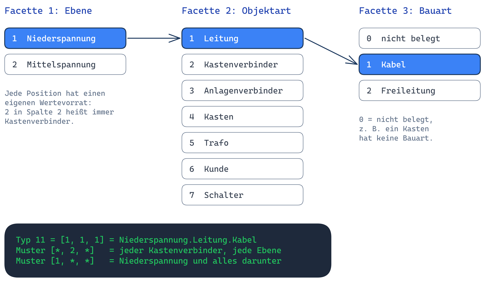

Blatt 3 · Typen
Typen als Facetten
Jeder Knoten und jede Kante hat genau einen Typ, gespeichert als eine Zahl. Was die Zahl bedeutet, steht in einer kleinen Typentabelle: ein Array aus Facetten wie Ebene, Objektart und Bauart. Regeln und Berechnungen sprechen Typen über Muster mit Platzhaltern an.

Facetten, kein Baum
Die Schreibweise Niederspannung.Leitung.Kabel sieht wie ein Baum aus, gemeint ist aber ein Vektor aus unabhängigen Facetten. Das ist wichtig für die Regeln: Nur so kann eine Regel „für jeden Kastenverbinder, egal welche Spannungsebene“ gelten. In einem Baum hätte der Kastenverbinder unter Niederspannung eine andere Nummer als unter Mittelspannung.
- Welche Facetten es gibt und wie viele, legt der Host fest. Die Tiefe hängt nur an der Typentabelle; Knoten und Kanten speichern immer nur eine Zahl.
0heißt „nicht belegt“: Ein Kasten hat keine Bauart.- Typ
0insgesamt ist reserviert für Hilfsknoten (untypisiert). Mit getrennten Ebenen gibt es zusätzlich einen Hilfstyp pro Ebene, z. B. „Niederspannung (untyped)“. - Die erste Facette ist die Ebene (Tier): Jeder ihrer Werte ist eine Ebene, auf die sich Suchen beschränken lassen (Blatt 7).
- Jeder Typ ist entweder ein Knoten- oder ein Kantentyp.
Muster ausprobieren
Wähle pro Facette einen Wert oder *. Die passenden Typen werden markiert. Das ist genau die Menge, auf die eine Regel oder ein Filter wirkt.
| Typ | Array | Anzeige | Element |
|---|
Regeln für Muster
| Muster | trifft |
|---|---|
[1, 1, 1] | genau Typ 11 |
[Niederspannung, *, *] oder [1, *, *] | Niederspannung selbst und alles darunter. * trifft auch „nicht belegt“. Die Kurzform Niederspannung.* geht auch; gezeigt wird die Klammerform. |
[*, 2, *] | jeden Kastenverbinder auf jeder Ebene |
[*, 1, 1] | jedes Kabel, Nieder- wie Mittelspannung |
* | alle typisierten Elemente, aber keine Hilfsknoten |
untyped | nur Hilfsknoten (Typ 0 und die Hilfstypen der Ebenen) |
untyped & [Niederspannung, *, *] | die Hilfsknoten der Niederspannung, z. B. für Regeln zu T-Stößen |
mehrere Muster, | | bedeuten ODER, z. B. [*, Kasten, *] | [*, Trafo, *] |
&, ! | UND und NICHT, z. B. [Mittelspannung, *, *] & ![*, *, Freileitung] |
Warum nur eine Zahl im Datensatz
- MusterEine Regel nennt
[*, Kastenverbinder, *]. - Einmal auflösenVor der Prüfung wird das Muster über die Typentabelle aufgelöst.
- MengeErgebnis ist eine Menge von Typnummern, hier
{13, 23}. - VergleichFür jede Kante wird nur geprüft, ob ihre Typnummer in der Menge ist. Das ist schnell und braucht keine Spalten pro Facette.
Die Typentabelle hat Dutzende Zeilen und liegt immer im Speicher. Knoten und Kanten gibt es millionenfach. Deshalb steht das Array nur in der Typentabelle und nicht in jedem Datensatz.